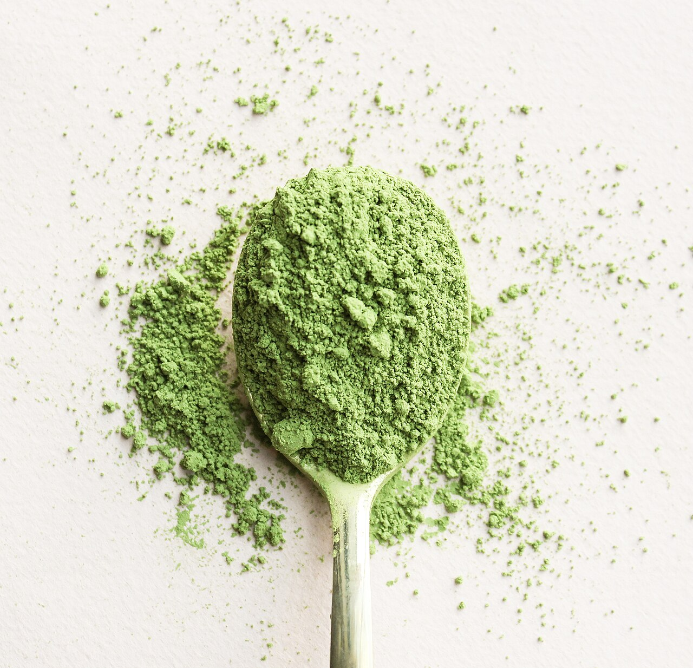
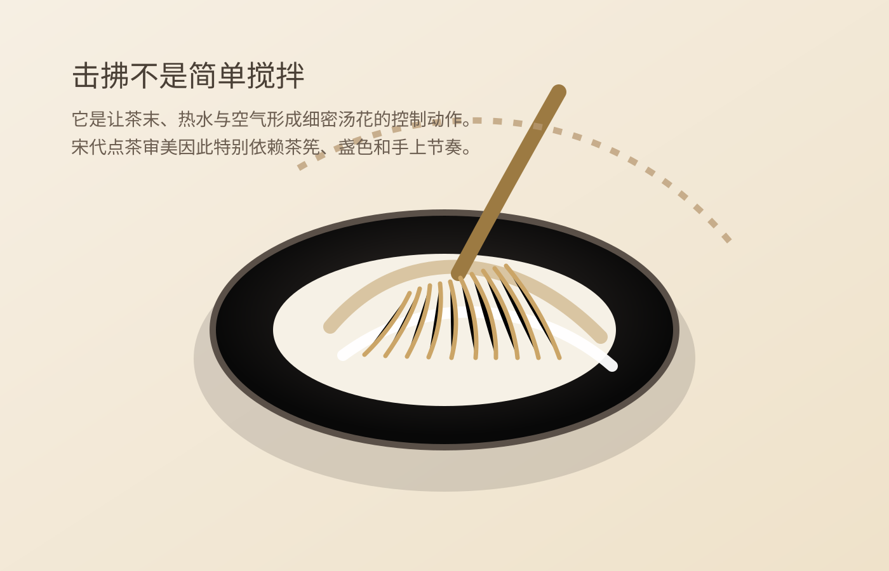

History Feature
When many people hear the word matcha today, they think first of Japanese tea ceremony, café drinks, cakes, soft serve, and bright green powders folded into modern desserts. Yet the longer historical story is far more entangled with China than that quick association suggests. Matcha connects to Chinese powdered tea and whisked tea traditions, to the sensory world of Song tea culture, to the later Ming turn toward loose-leaf steeping, and then to a modern consumer return built through desserts, tea chains, and industrial supply systems.
The real question is not simply whether matcha “came from China,” a line that is repeated so often it has become shallow. The more interesting questions are these: what exactly was powdered tea in Chinese history? How continuous is it with what consumers now call matcha? Why did a tea system built around grinding, whisking, froth, and bowl aesthetics lose its central place in China? And why, after fading from ordinary life, has matcha returned so strongly in contemporary Chinese markets?
If we reduce matcha to a fashionable flavor powder, we miss what makes it historically rich. It is not only a product story. It is a long chain that links tea technology, aesthetics, vessels, cross-cultural transmission, and modern consumer industry. Matcha keeps returning to public discussion not only because it looks elegant or sells well, but because it compresses one historical disappearance and one very different modern return into a single word.

It feels familiar because modern urban consumption has already made it ordinary. Matcha appears in bakeries, cafés, ice cream counters, bottled products, milk-based drinks, and seasonal brand collaborations. It is no longer a niche reference. It is a flavor that many consumers can order without thinking twice.
And yet it also feels strangely distant because most people hold only a fragment of its history. Some assume it is naturally Japanese and only recently entered China. Others remember the slogan that “matcha originated in China” but cannot clearly explain what powdered tea and whisked tea looked like in Chinese history, or how far modern commercial matcha is from that older world. Matcha therefore occupies a very contemporary position: almost everyone recognizes it, but far fewer understand the history that made it possible.
That is exactly why it deserves a fuller account. Matcha is not a subject that can be settled by one sentence about ownership. What makes it interesting is that it first developed within Chinese tea history, then continued and became deeply systematized in Japan after transmission, later lost mainstream centrality in China, and finally re-entered Chinese public life in a completely different industrial and consumer form. It is a broken but not erased historical line.
When people say matcha now, they usually mean a finely milled green tea powder used for whisking, mixing, desserts, or beverages. But the better historical entry point in the Chinese context is not the modern retail definition. It is the older system of powdered tea and whisked tea. In other words, there was first a technical and cultural world in which tea was processed into powder and then turned into drink through controlled whisking; only later do we arrive at the globally recognizable commercial category that modern consumers call matcha.
In Tang and especially Song China, tea was processed, ground, sifted, then placed in a bowl, met with hot water, and whipped with a whisk to create a fine white froth. That entire system is crucial for understanding where matcha sits in Chinese history. It was never just “tea made into powder.” It was a complete sensory order built around fineness, pouring rhythm, whisking technique, froth quality, vessel contrast, and visual judgment.
That is why discussions of matcha in Chinese history keep leading back to tea whisks and whisked-tea revival, tea baixi, and Jian ware bowls. These are not decorative side notes added later for cultural atmosphere. They are structural parts of the same powdered-tea world. Without whisked tea, it is hard to understand why matcha once mattered; without the bowl-centered visual and tactile order of that world, it is hard to explain why powdered tea could become so aesthetically charged.

Because tea history is not a straight line moving automatically from “primitive” forms to what modern people happen to prefer. Tang-Song tea culture emerged under specific material and social conditions: tribute systems, court and literati taste, processing technologies, vessel production, and expanding urban consumption all helped support powdered tea and whisked tea. That system was not a mistake or an immature stage. It was a highly developed world in its own right.
By the Song period, whisked tea had become extraordinarily refined. Tea was not only judged by aroma or what remained in the mouth. Writings associated with Song tea culture, including the world around the Daguan Chalun, show how closely people attended to bowl color, froth texture, visual contrast, and the stability of the tea surface. The surface of tea itself became an aesthetic event.
This is very different from the evaluation logic familiar to most modern tea drinkers. Today people are more likely to compare aroma, leaf shape, brew rounds, mouthfeel, or leaf-bottom quality. In the powdered-tea world, attention was trained differently. Tea was ground because greater control and more visible refinement were valued, not because powdered tea was seen as a compromised version of “real tea.” Once we understand that, matcha no longer looks like a marginal curiosity in Chinese history. It once sat at the center of elite and influential tea culture.
One reason matcha now appears globally “more Japanese” is simple: Japan preserved and systematized a powdered-tea tradition for much longer. Exchanges involving monks, tea, vessels, and cultural practice carried key parts of the Chinese powdered-tea and whisked-tea world eastward. Once in Japan, this tradition was not merely stored unchanged. It was reworked within religious settings, warrior culture, aesthetic discipline, and later tea practice into a highly organized and internationally recognizable system.
So yes, it is historically grounded to say that the deeper roots of matcha lie in Chinese tea history. But that statement becomes too thin if it stops there. A better formulation is this: crucial early histories of powdered tea and whisked tea developed in China; those practices and ideas were transmitted to Japan; and Japan, rather than simply preserving them, gave them a long institutional and aesthetic future after they lost mainstream centrality in China.
That is why modern Chinese consumers often feel a double recognition when they confront matcha. On one side, it seems reasonable to say it belongs to Chinese tea history. On the other, the modern visual and ritual image most people associate with matcha still arrives through Japan. This is not a contradiction. It is the historical truth of source, translation, continuation, and global recognition happening in different places and at different times.
The answer is not that one method was simply more “advanced” than another. The answer is that different tea systems suited different social, technical, and everyday conditions. As loose-leaf steeping became dominant from the Ming onward, the center of tea practice shifted away from grinding, whisking, and froth judgment toward the leaf itself: aroma, infusion rhythm, liquor clarity, vessel handling, and repeated steeping became more central.
This does not mean China somehow “forgot how to drink matcha.” It means that the main sensory logic of tea changed. Once tea was no longer evaluated through the same froth-centered visual order, the powdered-tea system naturally lost its everyday centrality. That was not merely a product disappearing. It was an entire framework of taste and attention being rewritten.
This matters because it corrects a very common misunderstanding. Matcha did not simply vanish because of cultural neglect. It faded because the larger tea world that had supported it ceased to be mainstream. That is why modern Chinese consumers often encounter matcha first as something imported or externally framed, rather than as the afterimage of an older domestic tea system.
First, what has returned is matcha as ingredient. It came back most visibly not through formal tea practice but through dessert culture, beverage retail, dairy products, bakery chains, bottled drinks, and flavor standardization. In other words, matcha did not first return to mass life as a historical orthodoxy. It returned as a highly legible and commercially useful flavor material.
Second, what returned is matcha as image. It offers a very efficient cultural signal for modern branding and social media: bright green, very fine powder, dedicated tools, visible preparation, a little ritual gravity, and a mood that feels both old and contemporary. Even consumers who know little about Song tea history easily absorb the suggestion that matcha is more refined, more intentional, or more content-rich than an ordinary green-tea flavor.
Only after that consumer return do many people begin to look backward historically. As Chinese-language discussions of Song aesthetics, tea whisks, tea baixi, Jian bowls, and non-heritage tea experiences have grown, more consumers have begun to realize that matcha is not simply a trendy imported taste. It has a real place in Chinese tea history. At that point, matcha stops being only a flavor and becomes a historical doorway again.


Because modern matcha is not a simple restoration of the old whisked-tea system. It is a modern product rewritten by agricultural practice, industrial milling, supply-chain standards, food manufacturing, and enormous consumer demand. Shade-growing techniques, processing consistency, color stability, flavor control, bakery use, café use, and chain-store scaling all matter now in ways that are very different from the Song powdered-tea world.
Seen this way, China’s renewed role in matcha production and consumption is not paradoxical at all. China has vast tea-growing capacity, a huge food-and-drink market, active urban consumer culture, and an increasingly visible appetite for reinterpreting tradition. Matcha can therefore belong to factories and tea houses at once. It can be an industrial ingredient and a historical talking point at the same time.
That is exactly how traditions often survive: not by returning in their original shape, but by being reorganized inside new media, new industries, and new daily habits. Matcha in today’s China is a perfect example. It did not come back as Song life revived intact, yet it still carries some of that older world back into circulation.
Because powdered tea is unusually easy to visualize. Compared with ordinary steeped leaf tea, matcha offers color, texture, tools, motion, and layers that can be shown quickly. Whether in whisked-tea experiences, dessert presentation, or brand imagery, it can deliver an instant sense that this is not just another tea flavor but something with method, ceremony, and historical weight.
That is why the matcha boom belongs to the same wider atmosphere as the renewed fascination with tea whisks and tea baixi. Many young consumers are not trying to reproduce the past with scholarly precision. They are looking for a fragment of life that feels enterable, shareable, slightly disciplined, and faintly historical. Matcha is unusually good at carrying that burden. It feels old but usable, elegant but commercially available, specialized but not inaccessible.
So the matcha boom is never only about taste. What persists behind it is a broader urban desire for visible forms of tradition. Consumers may not truly want to become Song people, but they are very willing to borrow a slower, more careful, more layered image of life for the space of a drink, a dessert, or an experience class.
The first lazy claim is: “Matcha is completely Chinese.” The problem is not that early Chinese history is irrelevant. The problem is that the sentence erases the centuries in which Japan preserved, transformed, codified, and internationally projected powdered-tea culture. Origins matter, but origins do not cancel what came after.
The second lazy claim is: “Matcha is Japanese and has little to do with China.” That is equally crude. Without the Tang-Song powdered-tea and whisked-tea traditions of China, and without the historical conditions that carried them eastward, the later Japanese matcha world would not exist in the form we know today. Erasing that layer also breaks the chain.
A more accurate view is that crucial early histories of powdered tea lie in China, highly systematized continuation and globally recognizable development took shape in Japan, and modern China has now reabsorbed matcha within a very different industrial and consumer environment. Matcha is not a simple one-way cultural possession. It is a long trajectory of transmission and reinterpretation.
Because it reminds us that Chinese tea never had only one legitimate form. Today many drinkers take loose-leaf steeping, gaiwans, pots, aroma, and leaf-bottom judgment as the obvious default. Matcha reopens a forgotten part of the story: tea in China was once also processed into powder, whipped into froth, judged by surface and contrast, and embedded in a very different sensory order.
It also reminds us that tradition is not static heritage. Things first formed in China can be carried elsewhere and developed there with extraordinary force. Systems that leave mainstream life can still return later in altered commercial, aesthetic, and industrial forms. Matcha is compelling precisely because it is neither a dead artifact nor merely a trendy flavor. It is evidence that a historical form can disappear from one center, survive through transformation elsewhere, and return again under modern conditions.
If you want to keep following this line, continue with Tea whisks, whisked tea, and the “Song revival”, Why tea baixi is trending again, and What “the way of tea” really means in Chinese history. Matcha is not an isolated keyword. It is one of the clearest entry points into how Chinese tea changed form across time, and how those older forms are being read again today.
Source references: Wikipedia: Matcha, Wikipedia: Whisked tea, Wikipedia: Emperor Huizong of Song, Wikipedia (Chinese): Daguan Chalun.